Homework 9 – Create a Website
Data 94, Spring 2021
This homework is due on Thursday, April 29th, 2021. Submission instructions for this assignment are a little different (nothing is uploaded to Gradescope); read the instructions carefully.
Overview
In this final homework of the semester, you will create a public-facing website with text and visualizations that you will create on your own, using a dataset that you will choose on your own. You’ll be able to share this website link with anyone you want, and you will submit the assignment by posting your website link on Ed (in this thread) for the rest of the class to see.
As you can see, we aren’t distributing this assignment to you in the form of a Jupyter notebook. Instead, we’re providing you with all of the instructions here. Don’t worry – even though this assignment looks quite different than those prior, we’ve designed it to be relatively straightforward and not that time-consuming. We promise you’ll enjoy it! 🎉
Here’s a brief summary of each part of the assignment, along with a time estimate.
- Finding a dataset and creating a visualization (1-2 hours).
- Creating a GitHub account and publishing a blank website (~15 minutes).
- Copying your content to your website (~30 minutes).
- Submitting your work (~10 minutes).
- (Optional) Adding more content.
- Grading
Throughout this tutorial, we will show you screenshots from an example website that we built. The links to this website and the corresponding repo (the term “repo” will be explained later on) are below. You cannot use this dataset.
- Website link: https://bigbilly23.github.io/2024-polls/
- GitHub repo: https://github.com/bigbilly23/2024-polls
Here are links to the website and GitHub repo created in Lecture 34. You cannot use this dataset either.
- Website link: https://bigbilly23.github.io/weather-chicago-sd/
- GitHub repo: https://github.com/bigbilly23/weather-chicago-sd
Part 1 – Finding a Dataset and Creating a Visualization 🎨
Note: We estimated that this part may take slightly longer than the others because it may take a while to find a dataset that you’re interested in and can make interesting visualizations with. You should not spend 1-2 hours writing code in this part.
- Find a dataset you want to work with in the CSV format and download it to your computer. Slides 13 and 14 of Lecture 33 list several potential sources.
- Try your best not to overlap datasets with others in the class, though if this happens by coincidence that’s fine. Don’t use a dataset we’ve already used this semester in this class and don’t use the dataset in the example we linked above (2024 elections polls).
- You may want to find more than one dataset in the event you aren’t able to make any interesting visualizations using your first choice.
- Don’t seek datasets with latitudes and longitudes, since unfortunately the instructions we’ll provide today will only work “regular” visualizations, not maps.
- Follow the steps in Slides 16-18 of Lecture 33 to create a new notebook with the necessary import statements and upload your dataset to your DataHub.
- Using
Table.read_table, load in your dataset and save it to a variable. You should now be good to go to perform any analysis you want.
- Using
- Get familiarized with the data.
- There are no concrete steps here; the work you do here will depend on your data. For example, you may want to
groupto see the distribution of a particular column, or draw ascatterplot to understand the relationship between two numerical columns. We’re not grading you on this step, it’s more just for you to understand the data you’ve chosen.
- There are no concrete steps here; the work you do here will depend on your data. For example, you may want to
- Create at least one of the following types of visualizations using your data. Feel free to create more than one (perhaps once you’ve finished the whole assignment), but only one is needed for full credit on the assignment. Don’t forget to give your visualizations appropriate axes labels and titles (you may lose points if you don’t). This is especially important here since your visualization will be standing alone on a website without code surrounding it.
- Grouped bar chart.
- Overlaid histogram.
- Scatter plot with labels or sizes or colors for each point.
- Line plot with multiple lines.
- No maps.
- In a Markdown cell in your notebook, write a sentence or two describing your dataset and where you found it (include a link to the website where you downloaded the CSV from). Write another short paragraph about the parts of the data you chose to visualize and any observations you made from the visualization(s) you created. We’re not looking for essays; don’t write more than ~120 words total across the two paragraphs.
- To include links in Markdown, use this syntax:
[text to display](URL). So for example,[this goes to Google](http://google.com)becomes this goes to Google.
- To include links in Markdown, use this syntax:
At this point, your notebook may look something like this example here. Scroll to the very bottom to see some example paragraphs.
Great! Now you have the information you need for your website. The hard part is done.
Part 2 – Creating a GitHub Account and a Blank Website 💻
- Create a GitHub account (go to the site and click “Sign Up” in the top right).
- Your username is up to you, but it may be a good idea to choose something professional since you might use this account in the future for something else. Your website URL will contain your username.
- After entering your credentials, it may ask you questions like “What kind of work do you do, mainly?”. You can skip these; scroll all the way to the bottom and continue.
- You’ll then need to verify your email address.
- Create a new repository. It may prompt you to do this after verifying your email; if it doesn’t, you can click the circular cat logo in the top left of your screen and then click the green button in the left pane.
- A repository, or repo for short, is like a folder for a project.
- You will need to select a name for the repository. Name it something related to the dataset that you visualized in the previous part, since your repo name will end up in the URL of your website. Don’t name it “94-homework” or something like that.
- Make sure to select Public and Add a README file. Overall, your settings should look like this (but with a different username and repo name):
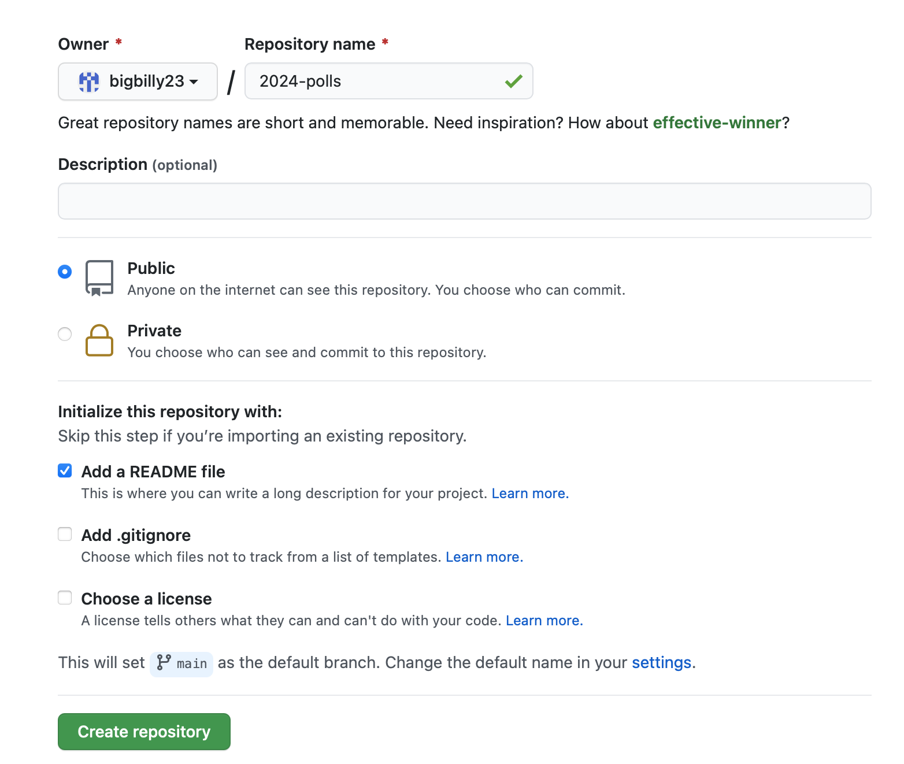 - Enable GitHub Pages for your repo. GitHub Pages is the feature we will use to create our website. Follow these steps:
- From this page (the main page of your repo), click “Settings”.
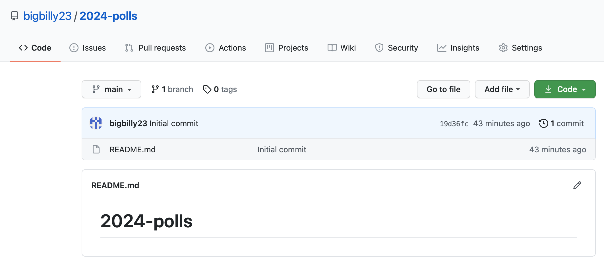
- Click “Pages” in the menu on the left (it should be towards the bottom).
- Under “Source”, change “None” to “main”. Click “Save”.
- Under “Theme Chooser”, click “Choose a theme”. It will allow you to choose one of several themes; pick the one you like the most and click “Select theme”. If you end up not liking your choice, you can always come back to this menu and change the theme, so don’t worry. Note: If you are brought to a page that has you try and edit your file (it may say something like “Edit new file”), just click “Cancel”.
- After you follow these steps, your site will be public. You will be shown its URL; it will be in the form
<your github username>.github.io/<your repo name>. Keep a tab open with your website while working on the rest of the assignment.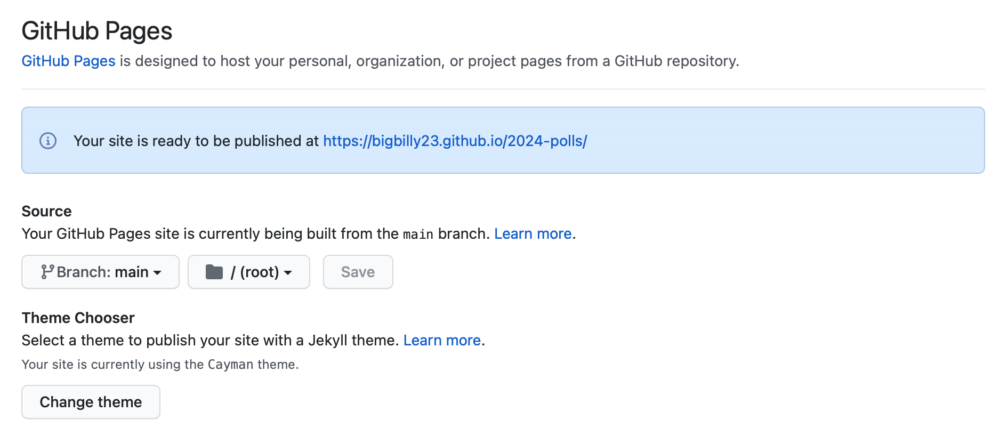
- From this page (the main page of your repo), click “Settings”.
Part 3 – Building Your Website 🔨
- Navigate back to the main page for your repo by clicking its name in the top-left of your screen. It should now look something like this, though the file
README.mdmight not have very much in it.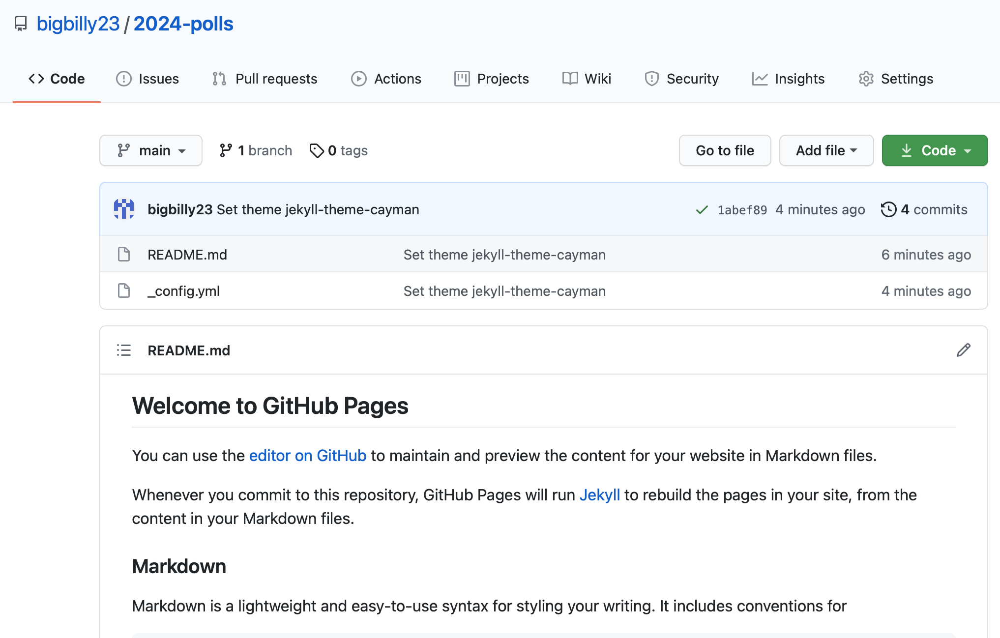 - The
README.mdfile is where you’ll put all of the content for your website (.mddenotes Markdown, the format we discussed at the start of the semester). To editREADME.md(both now and moving forward), you’ll need to click the pencil icon. (In the screenshot above, it’s right under the “4 minutes ago” text.)- You should be brought to an interface that allows you to edit
README.md. - Under the hood, GitHub Pages uses a library called Jekyll to convert your
README.mdto the standard HTML file format. - There’s another file in your repo, called
_config.yml– it serves to tell GitHub Pages which theme you chose (amongst other information). You will not edit it in this assignment.
- You should be brought to an interface that allows you to edit
- Delete everything currently in
README.mdand enter the text that you’d like to put on your website. Specifically:- Put a heading at the top of the file (using
#) that relates to your visualization and write your name on the second line. - Copy the two paragraphs you wrote in Part 1 to the file.
- Write
TODO: Put visualization herewhere you’d like to insert your visualization. There’s a good chance that this goes between the two paragraphs above, but it doesn’t have to. - This is the bare minimum required, but you can add other text/placeholders to your site too, if there are other things you want to write about or other visualizations you want to show. (In Part 5, you’ll see how to add other types of content to your site.)
- Tip: To space things out vertically, put
<br>on a new line on its own. (This is the equivalent of hitting enter several times in a Word doc.) - At this point, the text in
README.mdmight look something like this:
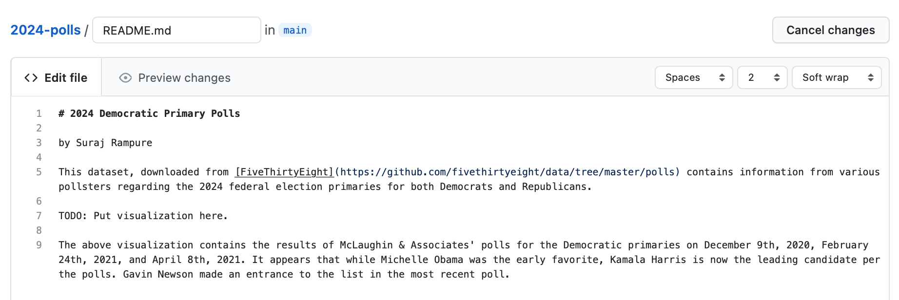 - Put a heading at the top of the file (using
- Scroll down to the bottom of the page, and click “Commit changes”.
- You can think of committing as saving your changes.
- You can add a commit message if you’d like, saying something like “added text to website”. (This is generally good practice.)
- After committing, open your website once again. The changes may take a few minutes to propagate but they will eventually appear. Here’s what our example site looks like; we chose the Cayman theme so your site may look different (and that’s fine).
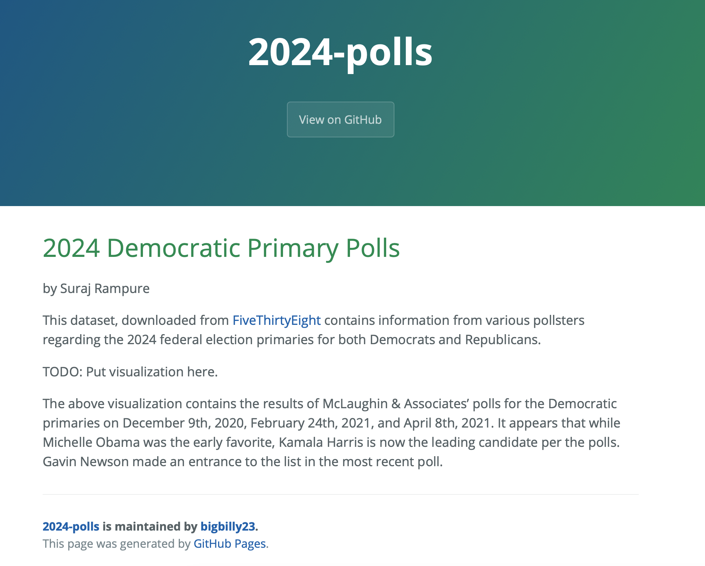
- Now your website is close, but it’s missing the pizzazz – your visualization! Here’s how you’ll get your visualization from your notebook to your website. Go back to your notebook that you created in Part 1.
- Assign your visualization to a variable name and add the argument
show = False(just like in Homework 7 and 8). Remember, no maps allowed.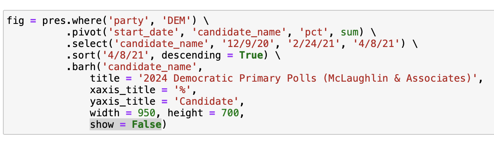 - In a new cell, run the following two lines.
figis a placeholder for the variable name of your visualization, so if you used a different variable name, changefigtoo.import plotly print(plotly.offline.plot(fig, include_plotlyjs=False, output_type='div')) - Copy the output of that code (it should start with
<div>and end with</div>, and be pretty long and ugly). - Go back to GitHub and edit
README.md. ReplaceTODO: Put visualization herewith the nasty looking code you just copied. Do this separately for each visualization you want to put on your website. - Before the code for your first visualization, put the following code on its own on a line:
<script src="https://cdn.plot.ly/plotly-latest.min.js"></script> - Make sure to commit your changes after (a good commit message here would be “added visualization”). At this point, your
README.mdmight look something like this: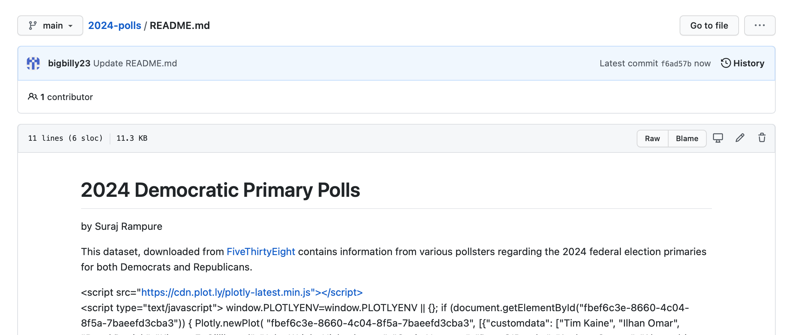
- Assign your visualization to a variable name and add the argument
- After committing in the previous stage, refresh your website until it loads. If you’re happy with the result, congrats! All of the ugly code you copied from your notebook has been converted into your original interactive visualization. At this point, feel free to tweak things. One suggestion is to change the
widthandheightof your image in your notebook before exporting. (You can repeat the previous step as many times as you want.) As long as you have these essentials, you can add whatever else you want to your website (see the bonus part for fun possibilities).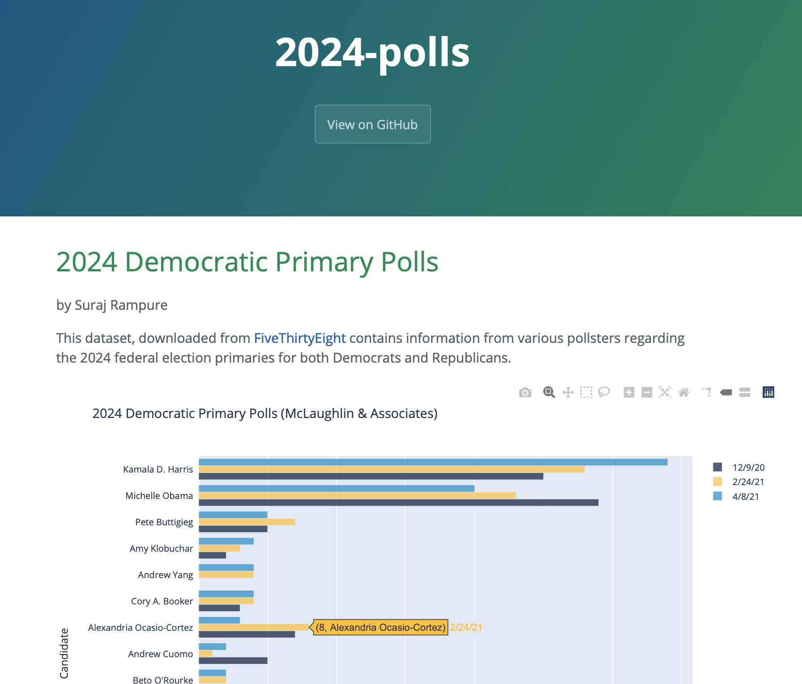
Here’s a link to the finalized example website, without any additional pieces from Part 5.
Part 4 – Submitting Your Work ✅
At this point, you’re ready to submit. There is an optional “Part 5” below that shows you how you can add additional components (like videos or Instagram posts) to your site. You’re free to submit first and then work on the optional parts, or vice versa. You also are not obligated to look at the optional part at all (but it’s fun!).
- Instead of submitting anything to Gradescope, you’re going to upload the notebook you created in Part 1 to GitHub too! Here’s how:
- Navigate back to your notebook, save, go to “Kernel > Restart & Run All”, and save again.
- Go to “File > Download as > Notebook (.ipynb)”. This will download your notebook to your computer.
- Navigate to the main page of your repo, and click “Add file” then “Upload files”. Then click “Choose your files” and select the notebook you just downloaded.
- After the progress bar completes, commit your changes. After these steps, your repo should look like this; here’s a link to the finalized repo for our example.
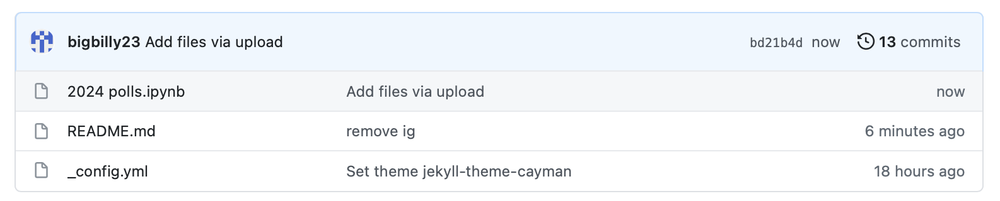 - In this post on Ed, post two links: the link to your website, and the link to your repo.
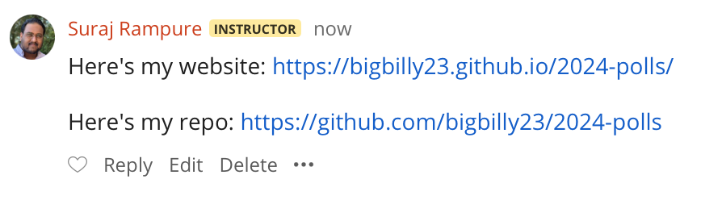
- That’s it – congrats on finishing! Make sure to take a look at others’ websites.
(Optional) Part 5 – Adding More Content 🧑💻
Note: Nothing in this part is required or expected of you. It may interest you, however!
Many of your favorite websites make it surprisingly easy to embed their content into your own website. Here, we’ll point you to some examples. Essentially these all work the same – you tell the website you want to embed their content (e.g. a tweet or an Instagram post) into your website, they give you a piece of code that does it for you, and you paste that code into your website where you want it. That’s it!
- Tweets. On the Twitter website, click the three dots at the top right of any tweet, then click “Embed Tweet”. A new site will appear; click “Copy Code” to copy the necessary code, and paste that code somewhere in your
README.md(but not in the middle of the long visualization code). - YouTube Videos. On the page of a YouTube video, click “Share”, then click “Embed”. Copy the code that appears and paste it somewhere in your
README.md. You’ll notice that the code has numbers for “width” and “height”; feel free to change these. - Songs. Follow these instructions for Spotify and these instructions for Apple Music. Other sites will have similar instructions.
- Instagram Posts. On the Instagram website, click the three dots at the top right of any post, then click “Embed” and then “Copy Embed Code”. Copy the code that appears and paste it somewhere in your
README.md(beware, the code may be a little long).
Here’s an example of an embedded Instagram post.
If there are other sites you want to embed content from, just Google “(name of site) embed” and you’ll likely find a way to copy the necessary code from their website into your website.
See here for how to add other elements to your website, like images.
Grading
This assignment is out of 7 points, and we expect that you will earn all 7 points. We will grade most of your work by looking at your website.
| Item | Points |
|---|---|
| Appropriate visualization that follows specifications | 3 |
| Paragraph introducting dataset and source | 1 |
| Paragraph explaining visualization | 1 |
| Attached notebook with all work shown | 2 |
| Total | 7 |
Have fun with it, and don’t hesitate to post any questions or clarifications on Ed!